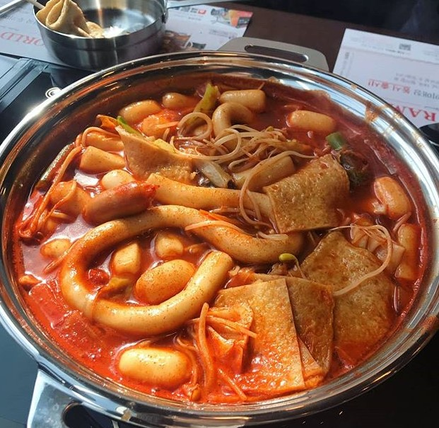
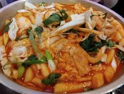
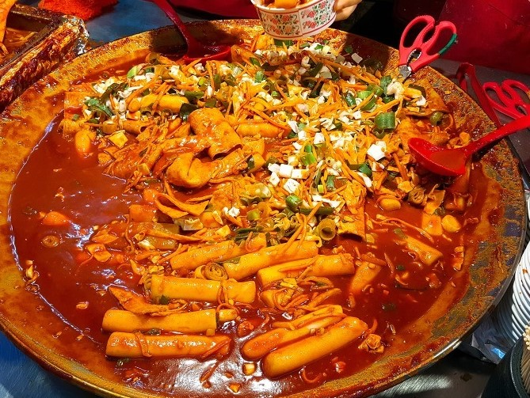

5위 <신전떡볶이>
매우면서도 중독되는 그 맛! 가늘고 길면서 후추향이 강하게나는 떡볶이!
가격이 저렴하면서도 중독되는 맛으로 Best 5위에 등극하게 되었습니다.
4위 <두끼>
직접 만들어서 먹는다! 자기 취향껏 만들어서 먹는 떡볶이!
가격도 적절한편이고 여러가지의 재료를 자기 취향껏 만들어 먹는것이 매력적이어서 개인적인 떡볶이집 Best 4위에 등극하게 되었습니다.
3위 <또보겠지떡볶이>
야채가 듬뿍들어간 떡볶이! 떡볶이와 야채를 섞어 먹으면 맛은 두말이 필요없는 맛!
가격은 적절한편이고 야채를 좋아하시는분이라면 적극 추천! 야채와 떡볶이가 잘 어우러진 또보겠지 떡볶이가 Best 3위에 등극하게 되었습니다.
2위 <이가네떡볶이>
이 떡볶이는 제가 부산에 갔을때 딱 한번 먹어본 떡볶이지만.. 아직도 생각날 정도로 강렬하게 뇌리에 꽂히는 맛!
떡볶이를 그렇게 좋아하지않는 주인장도 한번에 반해버린 맛이었기때문에 Best 2위에 등극하게되었습니다.
1위 <엽기떡볶이>

주인장은 매운것을 매우 좋아합니다. 그리고 엽떡은 매운맛이 아주 강렬하죠. 항상 맵다고하면서도 계속 시키는 나의 뇌!
주인장에게 떡볶이를 처음으로 좋아하게 해준 엽기떡볶이가 Best 1위에 등극하게 되었습니다.